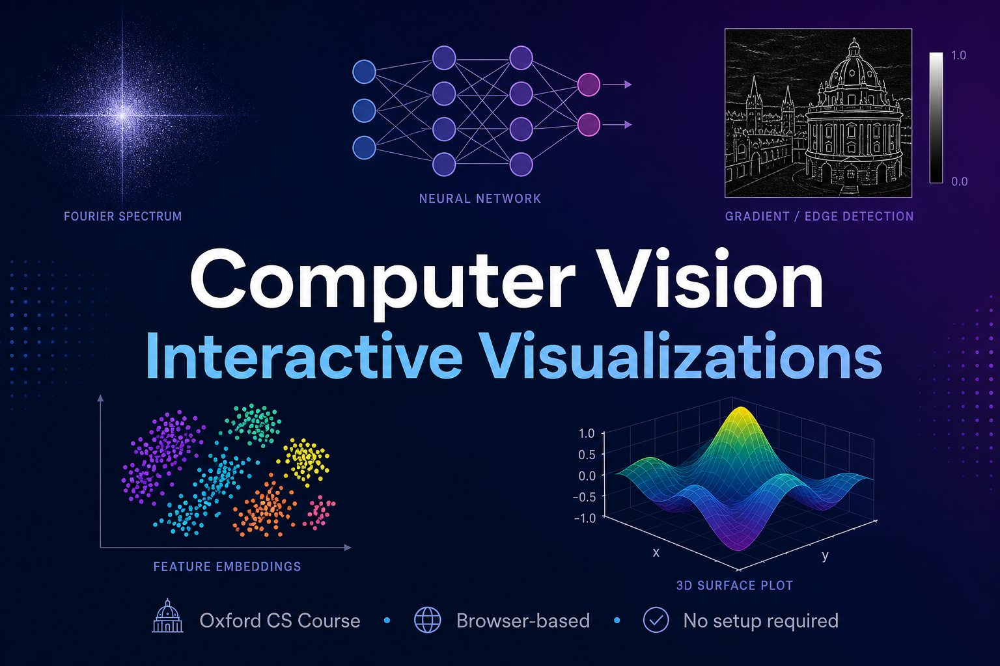

I put together a set of interactive, browser-based visualizations covering core computer vision topics — from image enhancement and Fourier transforms to CNNs, object detection, and generative models. No setup, no Jupyter notebooks, just open and play. Building visual intuition is half the battle in understanding computer vision, and I hope these help make the concepts click.
Based on the lecture notebooks from Christian Rupprecht's Computer Vision course at Oxford.